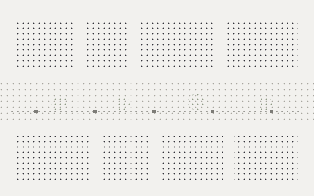
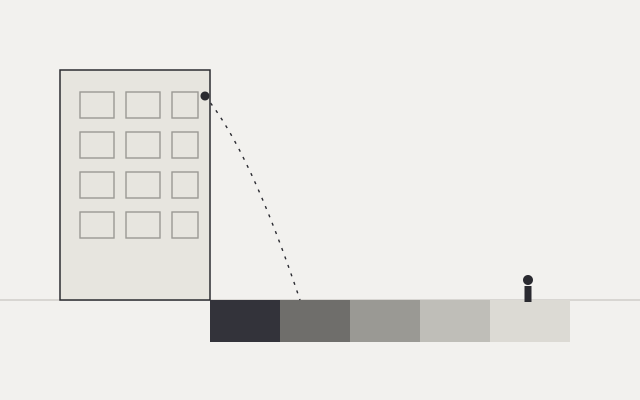
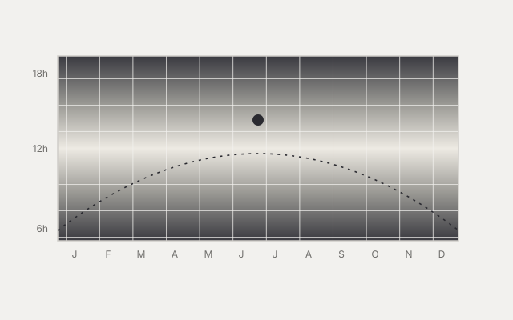

Reconstructing 3D Segmentation of the Urban Environment using Street View Images
34th GISA Annual Conference · 2025 · Toyama, Japan
I am preparing PhD applications to deepen geometry- and vision-based methods for measuring cities from everyday imagery — connecting reconstruction, semantics, and application-level urban questions. I look for groups where spatial computing, photogrammetry / 3D vision, and urban analytics meet, and where an architecture background is an asset rather than a side track.
Conference work from 2025 — manuscripts, slides, and abstracts.
34th GISA Annual Conference · 2025 · Toyama, Japan
61st ISOCARP World Planning Congress · 2025 · Riyadh, Saudi Arabia

From sequential street-view panoramas to analysis-ready environments and eye-level views along pedestrian paths — the main research line.

Turns panoramic street-view sequences into segmented 3D scenes that preserve spatial relations for mid-to-small scale urban analysis.

Maps facade-related debris risk and safer pedestrian zones during seismic events using accessible street-level imagery.

One analysis that can run on novel-view panoramas — not the core contribution.
Primary implementation is private while a patent is in process. Profile and selected repos below.
SVI_to_3d_code — private · core reconstruction & novel-view pipeline
@X3n0xs on GitHubDesign training that informs how I read urban space in research.

Drawings, competitions, visualization, and immersive 360° documentation — the spatial literacy behind my urban analytics work.